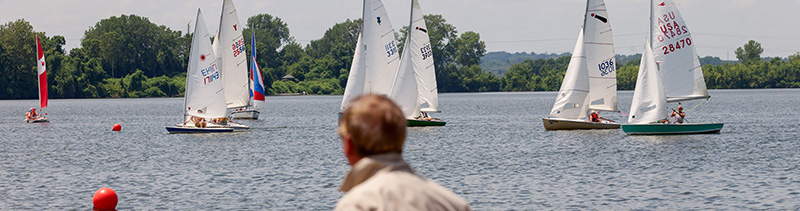

NEWS: FINAL 2017 Season Results
FairWinds Newsletter - April 2018
NEWS: Join our new Facebook Group to enter the conversation on and off the water!
Crew & Class Info Form: Want to learn how to sail? Crew & Sailing Interest Form
VIDEO LESSONS: Sailing Instructional Videos
Classes & Rides: Area Sailing Classes and New Sailor Options
We sail on beautiful Creve Coeur Lake located on the western edge of St. Louis County. Our lake is large enough to race but small enough to be close to home.
We host racing from April through October. Our club is made up of small boats; Y-Flyers, Lasers, Thistles, Sunfish, Capri 14.2s, Buccaneers. The skippers vary in experience from beginner to international competitor. We are welcoming and enjoy a fun racing environment. We do not hold protest hearings.
In 2017 we have 75 members who will participate in 12 race days, two fun sailing events, a Sea Scout Race, a picnic and an awards banquet. All of our races begin promptly at 2pm on scheduled Sundays. We usually get in 3 races on a race day. The size of our races vary from a handfull of boats to 20 or more. Click here for the 2017 Calendar.
Many of our members also race with the Carlyle Sailing Association (CSA) at Carlyle Lake in Illinois some 77 miles to the east of our lake. CSA hosted the 1994 Olympic Festival and hosts local, regional and national sailing competitions.
We are a social sailing club who is welcoming to new sailors. We do not provide sailing lessons, but offer a learning environment. The best way to get involved is to come to a race day and introduce yourself. The best way to learn how to sail is to crew. Crew get hands on experience "learning the ropes". Many of our board members recall the first day they too began as crew; "Tighten that jib", "prepare to come about" or "pray for a little more wind on our side of the course". (Those were the days.) Sailing knowledge as well as used boats are often passed down from skipper to crew only to begin racing and bring on crew to teach, and then they get their own boat. Our races are open to the public although it might be too much fun just to come out once.
